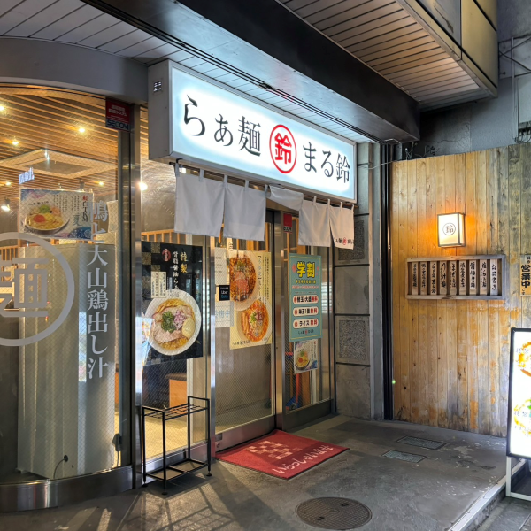

Photo No.2


10/11
小田急線 本厚木駅前 撮影者：みり
本厚木には家系のラーメン屋さんが多いのですが、珍しいさっぱり系のラーメン屋さんがあったので寄ってみました！
外装と内装の一部に気が使用されており、内装の一部はコンクリートという斬新でおしゃれなお店でした。
外装は少し和食屋さんに見えましたが、本格的なラーメンでとてもおいしかったです。
見た目に惹かれる素敵なお店でした^^